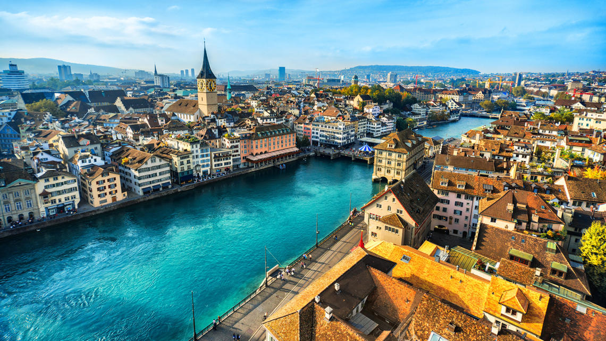
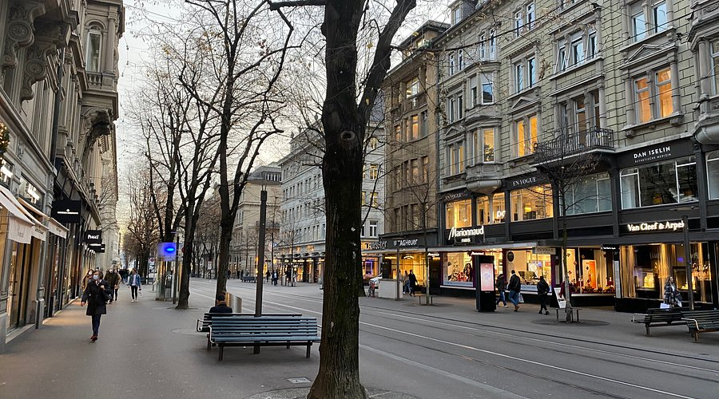
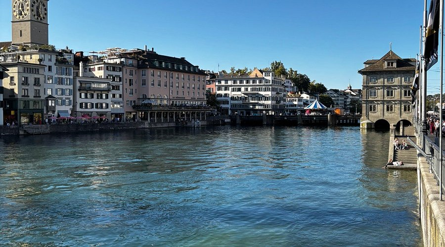
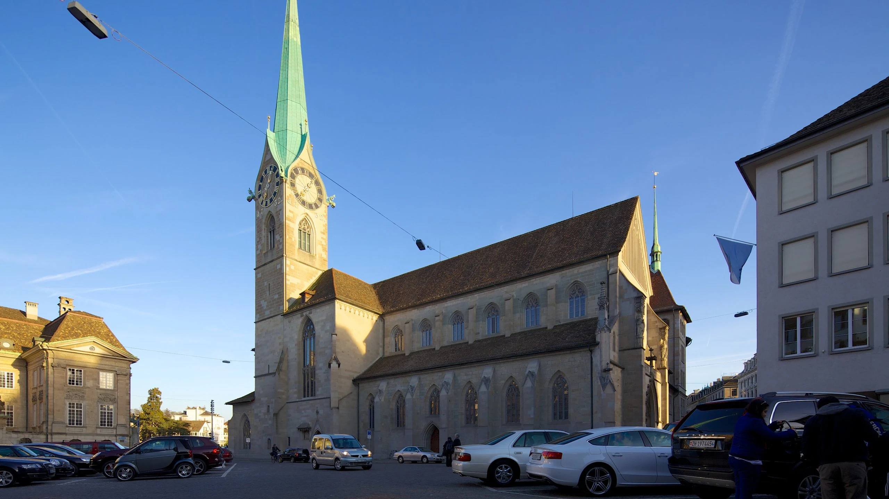
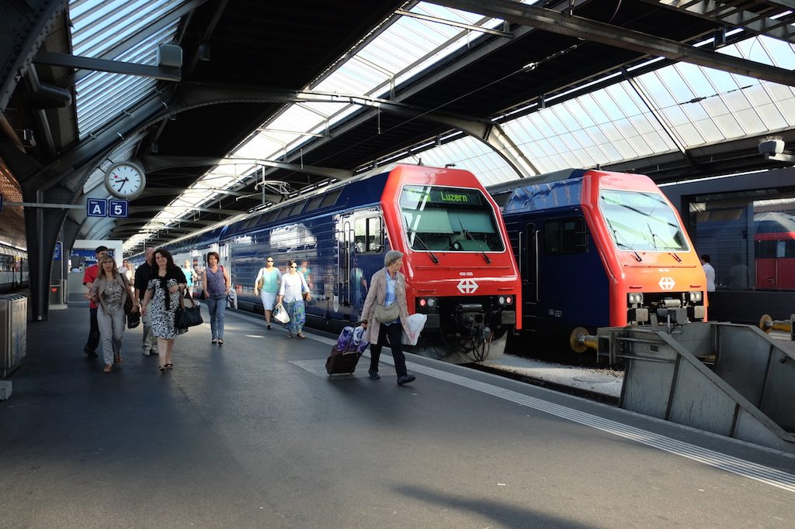

มนต์เสน่ห์แห่งซูริก
ซูริกไม่ได้เป็นเพียงเมืองที่ใหญ่ที่สุดในสวิตเซอร์แลนด์ แต่เป็นศูนย์รวมของวัฒนธรรม นวัตกรรม และคุณภาพชีวิตระดับโลก ที่นี่...ประวัติศาสตร์อันยาวนานของย่านเมืองเก่าถูกโอบล้อมด้วยพลังขับเคลื่อนของเมืองสมัยใหม่ได้อย่างลงตัวที่สุด

สถานที่ห้ามพลาด
โบสถ์ Grossmünster
ปีนขึ้นไปบนหอคอยคู่สัญลักษณ์ของเมือง เพื่อชมทิวทัศน์อันน่าทึ่งของแม่น้ำลิมมัตและเมืองเก่า
ทะเลสาบซูริก
สัมผัสชีวิตชีวาของเมืองด้วยการล่องเรือ, ปิกนิกริมฝั่ง หรือเพียงแค่นั่งชมความงามของน้ำและภูเขา
พิพิธภัณฑ์แห่งชาติสวิส
เดินทางย้อนเวลาผ่านประวัติศาสตร์และวัฒนธรรมของสวิตเซอร์แลนด์ในปราสาทเทพนิยายแห่งนี้
ภาพความทรงจำแห่งซูริก



